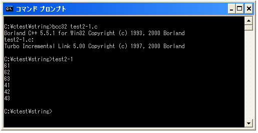
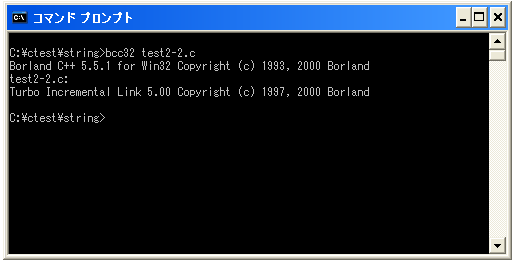
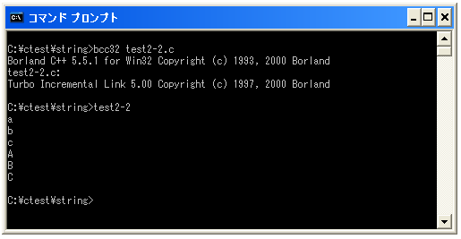

文字コード
「a」や「G」などの文字は、文字コードと呼ばれるコードが1つ1つ割り当てられています。これはコンピュータの内部では2進数である0と1の組み合わせで全て記録されるためです。1つの文字コードには1つの文字が割り当てられています。
例えば「a」と言う文字は文字コードで言うと「0x61」であり「G」と言う文字は「0x47」と言う文字コードに対応しています。(16進数表示しているのは2進数は人間に取って分かりにくいためです)。
厳密に言えば、文字に対する文字コードの対応表は色々な種類が存在します。シフトJISやUNICODEなど色々な対応表が使われているためどの文字コードが使われているのかを意識する必要がありますが取りあえずは気にしないで下さい。
では文字に対応した文字コードを表示させてみましょう。文字コードを16進数で表示するには次のように記述を行います。
printf("%X¥n", 文字);
例えば'a'という文字に対応する文字コードを出力するには次のように記述します。
printf("%X¥n", 'a');
サンプルプログラム
では実際に試してみます。
#include <stdio.h>
int main(void){
printf("%X¥n", 'a');
printf("%X¥n", 'b');
printf("%X¥n", 'c');
printf("%X¥n", 'A');
printf("%X¥n", 'B');
printf("%X¥n", 'C');
return 0;
}
上記を「test2-1.c」の名前で保存します。まずコンパイルを行います。

コンパイルが終わりましたら「test2-1」と入力して実行します。

結果を見て頂くと分かる通り文字と文字コードの対応表は次のような感じとなっています。
a <==> 0x61 b <==> 0x62 c <==> 0x63 A <==> 0x41 B <==> 0x42 C <==> 0x43
「a」「b」「c」は順番に文字コードが割り当てられています。また「a」と「A」は別の文字コードが対応していることから分かる通り小文字と大文字は区別されています。
文字コードから文字を出力する
文字と文字コードが一対一で対応していることはお分かり頂いたと思います。今度は文字コードを使って文字を画面に表示させてみましょう。16進数で表された文字コードに対応する文字を出力するには次のように記述します。
printf("%c¥n", '¥x文字コード');
例えば「0x61」という文字コードに対応する文字を出力するには次のように記述します。
printf("%c¥n", '¥x61');
では実際に試してみます。
サンプルプログラム
#include <stdio.h>
int main(void){
printf("%c¥n", '¥x61');
printf("%c¥n", '¥x62');
printf("%c¥n", '¥x63');
printf("%c¥n", '¥x41');
printf("%c¥n", '¥x42');
printf("%c¥n", '¥x43');
return 0;
}
上記を「test2-2.c」の名前で保存します。まずコンパイルを行います。

コンパイルが終わりましたら「test2-2」と入力して実行します。

文字コードに対応した文字が順に表示されました。
( Written by Tatsuo Ikura )

著者 / TATSUO IKURA
初心者～中級者の方を対象としたプログラミング方法や開発環境の構築の解説を行うサイトの運営を行っています。